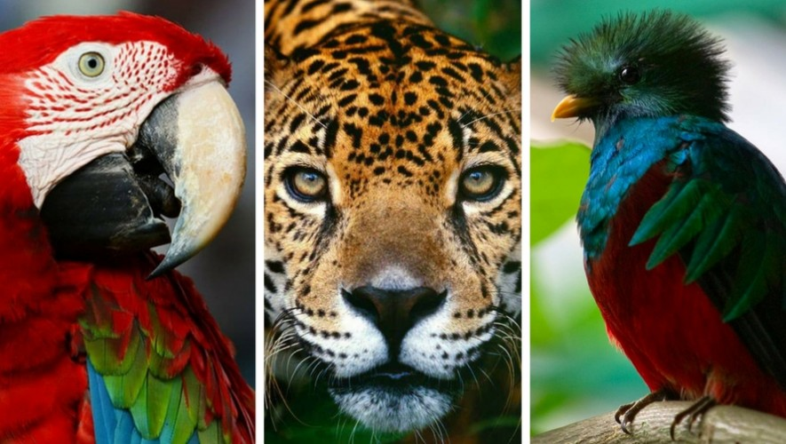
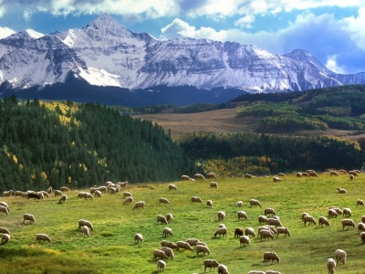
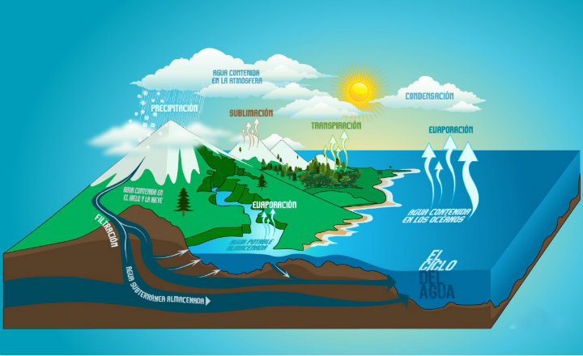

DIVERSIDAD DE ECOSISTEMAS Y ÁREAS PROTEGIDAS

|
Características básicas de una comunidadTodas las poblaciones que interactúan en unárea determinada constituyen una comunidad biótica... |
Áreas protegidasLas áreas naturales protegidas tienen como fianlidad conservar y proteger el patrionio natural de una nacion, la biodiversidad y las condiciones naturales representativas de ecosistemas estratégicos o impostantes... |
FLUJO DE MATERIA Y ENERGÍA
|
EcosistemaEl ecosistema es un sistema en dodnde interactúan los componentes funcionales... |
|  | Componentes y funciones de un ecosistemaPara comprender la función de un ecosistema debemos conocer cada uno de sus componentes estructurales, que reciben el nombre de factores ambientales... |
CICLOS BIOGEOQUÍMICOS

|
Tipos de Ciclos biogeoquímicosTodos los seres vivos que habitamos el planeta necesitamos obtener nutrientes a través del alimento para sobrevivir. Los elementos indispensables para la vida a menudo se encuentran en un ser vivo o en la tierra y sufren cambios químicos. |